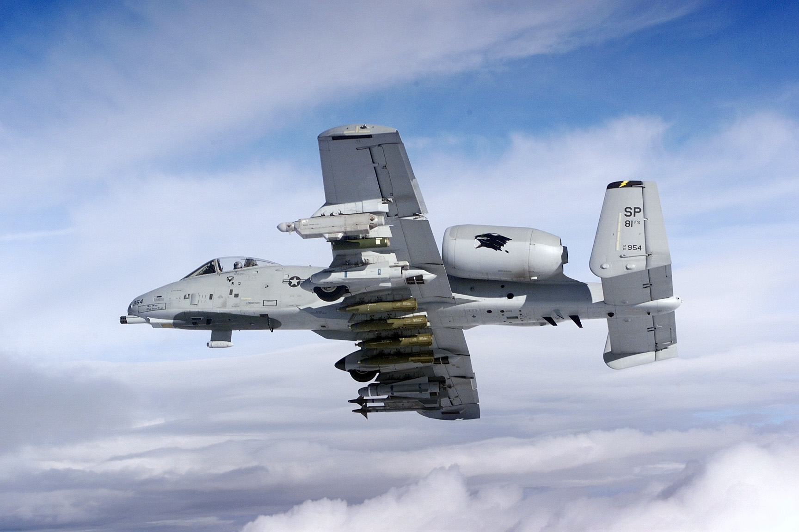
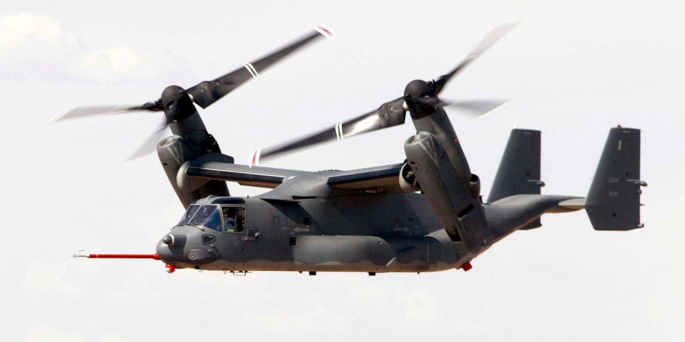
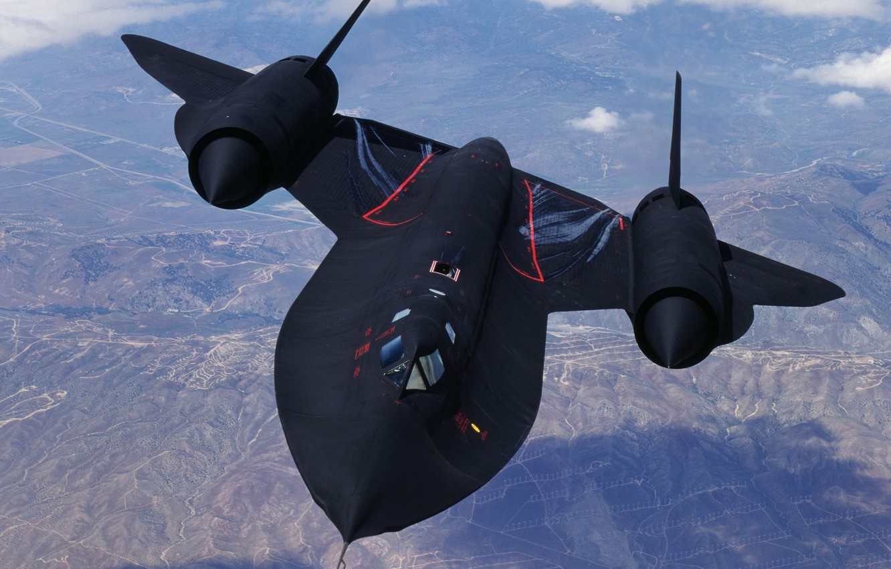
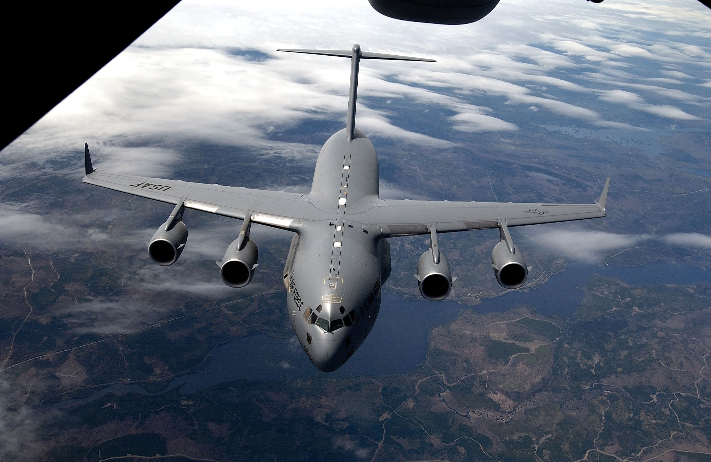
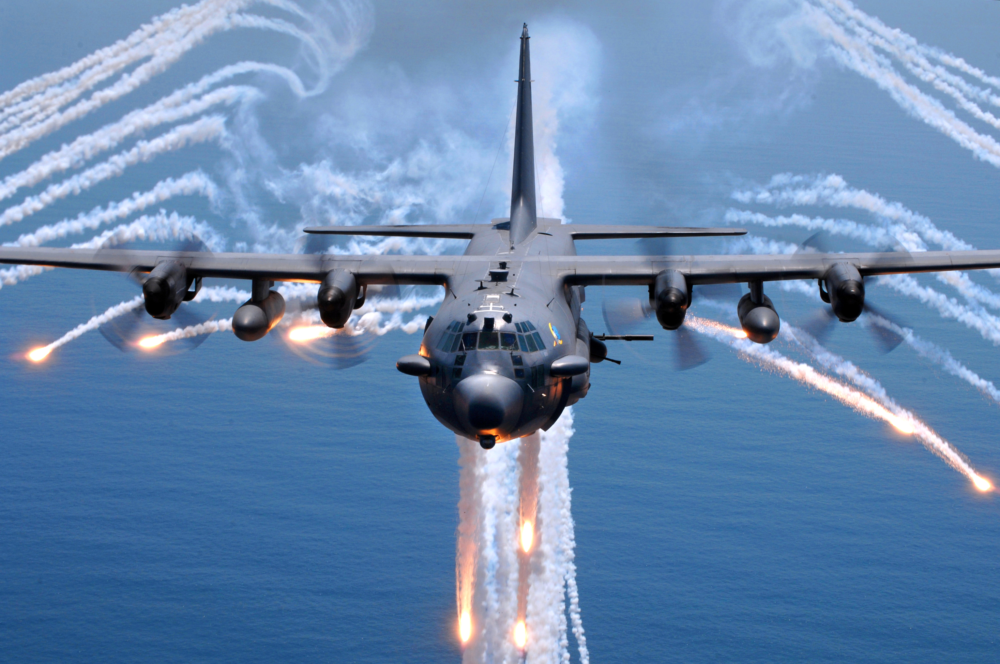

A-10 Thunderbolt

Fairchild A-10/OA-10 Thunderbolt II, nazwa kodowa Warthog – pierwszy amerykański samolot bliskiego wsparcia sił lądowych Sił Powietrznych Stanów Zjednoczonych.
A-10 jest jednomiejscowym, efektywnym i bardzo odpornym na uszkodzenia, napędzanym dwoma silnikami turbowentylatorowymi samolotem szturmowym przeznaczonym do niszczenia czołgów, pojazdów opancerzonych i innych celów naziemnych.
Nazwa Thunderbolt została nadana tej maszynie na cześć P-47 Thunderbolta, samolotu myśliwsko-bombowego z drugiej wojny światowej.
Konstrukcja samolotu jest specjalnie wzmocniona, aby zwiększyć szansę przetrwania bezpośrednich trafień pociskami przeciwpancernymi i burzącymi o kalibrze do 23 mm. A-10 ma potrojone systemy sterowania lotem i podwojone instalacje hydrauliczne wspomagane systemami ręcznymi. Dzięki takim zabezpieczeniom możliwy jest lot i lądowanie z niesprawnymi instalacjami hydraulicznymi lub nawet częściową utratą powierzchni nośnej skrzydeł. Ponadto samouszczelniające się zbiorniki paliwa zabezpieczono dodatkowo pianką zabezpieczającą przed powstaniem pożaru. Zarówno kabina pilota, jak i najważniejsze systemy sterowania chronione są pancerzem tytanowym o masie 400 kg.
Samoloty A-10 były określane przez wrogie wojska różnymi nazwami:
Jeśli chcesz obejrzeć filmik, który zawiera fajną ciekawostkę, kliknij ten przycisk --> --Lub ten by zmienić na video z A-10 w akcji.
Konstrukcja samolotu jest specjalnie wzmocniona, aby zwiększyć szansę przetrwania bezpośrednich trafień pociskami przeciwpancernymi i burzącymi o kalibrze do 23 mm. A-10 ma potrojone systemy sterowania lotem i podwojone instalacje hydrauliczne wspomagane systemami ręcznymi. Dzięki takim zabezpieczeniom możliwy jest lot i lądowanie z niesprawnymi instalacjami hydraulicznymi lub nawet częściową utratą powierzchni nośnej skrzydeł. Ponadto samouszczelniające się zbiorniki paliwa zabezpieczono dodatkowo pianką zabezpieczającą przed powstaniem pożaru. Zarówno kabina pilota, jak i najważniejsze systemy sterowania chronione są pancerzem tytanowym o masie 400 kg.
Samoloty A-10 były określane przez wrogie wojska różnymi nazwami:
- Podczas I wojny w Zatoce w 1991, załogi irackich czołgów nazywały je Szepczącą Śmiercią.
- W 2003 po klęsce wojsk irackich złapani żołnierze nazywali A-10 mianem Diabelski Krzyż.
- W Stanach Zjednoczonych Thunderbolt II jest nazywany Warthog.
Jeśli chcesz obejrzeć filmik, który zawiera fajną ciekawostkę, kliknij ten przycisk --> --Lub ten by zmienić na video z A-10 w akcji.
V-22 Osprey

Bell-Boeing V-22 Osprey – amerykański wielozadaniowy zmiennowirnikowiec pionowego i/lub krótkiego startu i lądowania.
Osprey jest pierwszym produkowanym seryjnie statkiem powietrznym z obracanym układem napędowym z wirnikami o średnicy 12 metrów umocowanymi wraz z silnikami i
układami przeniesienia napędu w gondolach na końcówkach skrzydeł. Maszyna ta startuje i ląduje jak śmigłowiec, kiedy gondole z silnikami ustawione są pionowo
(wirniki w pozycji poziomej). Po starcie gondole obracają się i po 12 sekundach zatrzymują w pozycji do lotu poziomego.
Osprey może też startować podobnie jak samolot krótkiego startu i lądowania (STOL) po obróceniu gondoli napędowych o kąt 45 stopni.
Dla zmniejszenia miejsca zajmowanego przez samolot można złożyć jego skrzydła i wirniki, co zajmuje od 90 do 120 sekund.
Osprey został opracowany wspólnie przez Bell Helicopter Textron, produkującego skrzydła, gondole silnikowe z silnikami Rolls-Royce'a, wirniki, układ napędowy,
powierzchnie sterowe ogona i rampę załadunkową i Boeing Company, produkującego kadłub, kokpit, awionikę i układ sterowania.
Spółka produkująca Ospreye nosi nazwę Bell-Boeing.
Czytaj dalej...
SR-71 Blackbird

Lockheed SR-71 Blackbird – samolot dalekiego zwiadu strategicznego, najszybszy samolot kiedykolwiek wprowadzony do służby operacyjnej w siłach powietrznych.
Zaprojektowany na przełomie lat 50. i 60. XX wieku na zamówienie CIA, eksploatowany przez CIA, NASA oraz USAF.
Dwusilnikowy odrzutowy średniopłat w układzie delta, osiągający prędkość Mach 3,5 oraz pułap 26 000 metrów, dzięki temu był nieosiągalny dla ówczesnych systemów obronnych.
SR-71 był samolotem nieuzbrojonym, dwumiejscowym, w drugiej kabinie za pilotem znajdował się operator RSO,
czyli operator elektronicznej aparatury zwiadowczej (ang. reconnaissance systems officer).
Jej zasięg pozwalał na głęboką penetrację terenu przeciwnika.
We wczesnej wersji myśliwskiej YF-12A zamontowano trzy rakietowe pociski zdalnie sterowane; pozostałe wersje samolotu pozostały nieuzbrojone. Wersja ta nie weszła do produkcji i uzbrojenia.
Zbudowano ogółem 32 egzemplarze SR-71. Ze względu na bardzo wysokie koszty utrzymania samolotu i niezbędnej do jego eksploatacji infrastruktury został wycofany z linii pod koniec lat osiemdziesiątych dwudziestego stulecia. Teraz ich rolę przejęły satelity rozpoznawcze. Trzy sztuki zostały przekazane NASA. Ostatni lot samolotu tego typu odbył się 9 października 1999. Czytaj dalej...
We wczesnej wersji myśliwskiej YF-12A zamontowano trzy rakietowe pociski zdalnie sterowane; pozostałe wersje samolotu pozostały nieuzbrojone. Wersja ta nie weszła do produkcji i uzbrojenia.
Zbudowano ogółem 32 egzemplarze SR-71. Ze względu na bardzo wysokie koszty utrzymania samolotu i niezbędnej do jego eksploatacji infrastruktury został wycofany z linii pod koniec lat osiemdziesiątych dwudziestego stulecia. Teraz ich rolę przejęły satelity rozpoznawcze. Trzy sztuki zostały przekazane NASA. Ostatni lot samolotu tego typu odbył się 9 października 1999. Czytaj dalej...
C-5 Galaxy

Lockheed C-5 Galaxy – ciężki, wojskowy samolot transportowy zbudowany przez amerykańską wytwórnię Lockheed Corporation,
zaprojektowany w celu zapewnienia strategicznego, międzykontynentalnego transportu wojska i sprzętu wojskowego jako następca wycofanego ze służby C-141 Starlifter.
C-5 Galaxy jest największym amerykańskim wojskowym samolotem transportowym i jedną z największych tego typu maszyn na świecie (większe od niego są w kolejności od
największego: An-225 Mrija, Airbus A380 i An-124 Rusłan).
Jedynym użytkownikiem C-5 Galaxy na świecie są Siły Powietrzne Stanów Zjednoczonych.
Samoloty C-5 Galaxy wraz z mniejszymi Boeing C-17 Globemaster III są wykorzystywane przez amerykańskie Dowództwo Transportu Powietrznego Air Mobility Command do globalnego transportu wyposażenia wojskowego dla amerykańskich sił zbrojnych. C-5 jest zdolny do przewożenia całych w pełni wyposażonych jednostek wojskowych wraz z ciężkim sprzętem, włączając w to czołgi, w dowolne miejsce na świecie, zapewniając konieczne wsparcie dla walczących sił. Czytaj dalej...
Samoloty C-5 Galaxy wraz z mniejszymi Boeing C-17 Globemaster III są wykorzystywane przez amerykańskie Dowództwo Transportu Powietrznego Air Mobility Command do globalnego transportu wyposażenia wojskowego dla amerykańskich sił zbrojnych. C-5 jest zdolny do przewożenia całych w pełni wyposażonych jednostek wojskowych wraz z ciężkim sprzętem, włączając w to czołgi, w dowolne miejsce na świecie, zapewniając konieczne wsparcie dla walczących sił. Czytaj dalej...
C-130 Hercules
 Lockheed C-130 Hercules – amerykański średni czterosilnikowy wojskowy samolot transportowy o napędzie turbośmigłowym, produkowany przez wytwórnię Lockheed.
Od wprowadzenia do służby w grudniu 1956 do 2006 wyprodukowano ponad 2260 egzemplarzy tej maszyny w 40 wersjach, w którą wyposażone są siły zbrojne ponad 50 krajów świata.
W grudniu 2006 C-130 Hercules stał się trzecią maszyną obok B-52 Stratofortress i English Electric Canberra, wykorzystywaną bez przerwy od 50 lat przez siły zbrojne,
dla których został zaprojektowany, w tym wypadku Siły Powietrzne Stanów Zjednoczonych, będąc jednocześnie najdłużej produkowanym samolotem w historii lotnictwa.
Najnowszą budowaną wersją Herculesa jest C-130J.
Lockheed C-130 Hercules – amerykański średni czterosilnikowy wojskowy samolot transportowy o napędzie turbośmigłowym, produkowany przez wytwórnię Lockheed.
Od wprowadzenia do służby w grudniu 1956 do 2006 wyprodukowano ponad 2260 egzemplarzy tej maszyny w 40 wersjach, w którą wyposażone są siły zbrojne ponad 50 krajów świata.
W grudniu 2006 C-130 Hercules stał się trzecią maszyną obok B-52 Stratofortress i English Electric Canberra, wykorzystywaną bez przerwy od 50 lat przez siły zbrojne,
dla których został zaprojektowany, w tym wypadku Siły Powietrzne Stanów Zjednoczonych, będąc jednocześnie najdłużej produkowanym samolotem w historii lotnictwa.
Najnowszą budowaną wersją Herculesa jest C-130J.
Głównym przeznaczeniem Herculesa jest transport towarów i osób, także rannych, na średnich odległościach. Zdolność lądowania na nieutwardzonych pasach startowych czyni z niego bardzo uniwersalną maszynę, odpowiednią do pełnienia wyspecjalizowanych zadań: wsparcia powietrznego (AC-130 Spectre), służby ratowniczo-poszukiwawczej SAR, jako latającej cysterny, rozpoznania meteorologicznego, gaszenia pożarów czy ewakuacji medycznej MEDEVAC. Jedynym cywilnie użytkowanym Herkulesem w Europie jest maszyna linii Air Contractors z Irlandii. Czytaj dalej...
AC-130

AC-130 – uzbrojona wersja samolotu Lockheed C-130 Hercules produkowana w kooperacji przez wytwórnie Lockheed i Boeing. Samoloty te posiadają uzbrojenie
strzeleckie i artyleryjskie tylko na jednej, lewej burcie i są przystosowane do atakowania tylko celów naziemnych podczas przelotu lub lotu po okręgu.
Głównym zadaniem należących do USAF samolotów AC-130H Spectre i AC-130U Spooky jest bliskie wsparcie piechoty, atakowanie celów naziemnych i obrona własnych obiektów.
Misje bliskiego wsparcia polegają na ułatwieniu działań piechoty, także na terenach zurbanizowanych oraz osłonie powietrznej konwojów.
Obrona obiektów polega na patrolowaniu przestrzeni powietrznej wokół ważnych obiektów, głównie baz lotniczych i ochronie przed siłami naziemnymi wroga.
Na pokładzie samolotów AC-130 znajduje się ciężkie uzbrojenie strzeleckie i artyleryjskie zintegrowane z nowoczesnymi sensorami, systemami nawigacyjnymi i kierowania ogniem, umożliwiające skuteczne rażenie celów w całkowitej ciemności i w trudnych warunkach atmosferycznych. Wyposażenie elektroniczne stanowi radar oraz kamery telewizyjne pracujące także w podczerwieni umożliwiające identyfikację celów i odróżnienie ich od własnych jednostek. Unowocześniona wersja AC-130U Spooky wyposażona jest także w nowoczesny radar z syntetyczną aperturą AN/ALQ-180 umożliwiający wykrywanie i identyfikację celów z dużych odległości. Czytaj dalej...
Na pokładzie samolotów AC-130 znajduje się ciężkie uzbrojenie strzeleckie i artyleryjskie zintegrowane z nowoczesnymi sensorami, systemami nawigacyjnymi i kierowania ogniem, umożliwiające skuteczne rażenie celów w całkowitej ciemności i w trudnych warunkach atmosferycznych. Wyposażenie elektroniczne stanowi radar oraz kamery telewizyjne pracujące także w podczerwieni umożliwiające identyfikację celów i odróżnienie ich od własnych jednostek. Unowocześniona wersja AC-130U Spooky wyposażona jest także w nowoczesny radar z syntetyczną aperturą AN/ALQ-180 umożliwiający wykrywanie i identyfikację celów z dużych odległości. Czytaj dalej...